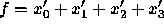

ZDDs are often generated by converting existing BDDs. (See Section 3.11.) However, it is also possible to build ZDDs by applying boolean operators to other ZDDs, starting from constants and projection functions. The following fragment of code illustrates how to build the ZDD for the function . We assume that the four variables already exist in the manager when the ZDD for f is built. Note the use of De Morgan's law.
DdManager *manager;
DdNode *f, *var, *tmp;
int i;
manager = Cudd_Init(0,4,CUDD_UNIQUE_SLOTS,
CUDD_CACHE_SLOTS,0);
...
tmp = Cudd_ReadZddOne(manager,0);
Cudd_Ref(tmp);
for (i = 3; i >= 0; i--) {
var = Cudd_zddIthVar(manager,i);
Cudd_Ref(var);
f = Cudd_zddIntersect(manager,var,tmp);
Cudd_Ref(f);
Cudd_RecursiveDerefZdd(manager,tmp);
Cudd_RecursiveDerefZdd(manager,var);
tmp = f;
}
f = Cudd_zddDiff(manager,Cudd_ReadZddOne(manager,0),tmp);
Cudd_Ref(f);
Cudd_RecursiveDerefZdd(manager,tmp);
This example illustrates the following points: